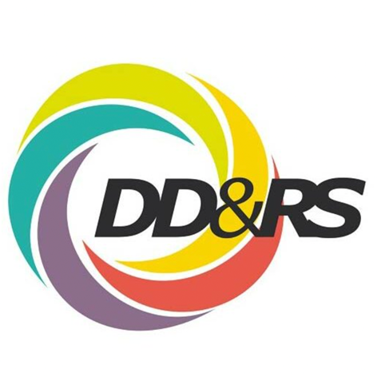

Le Référentiel National DD&RS de l'Enseignement Supérieur et de la Recherche (Label DD&RS) structure les engagements écologiques, sociétaux et éthiques des établissements et des grands projets de transport selon 5 axes stratégiques et leurs domaines transversaux d'application.
Intégration du développement durable dans la vision, le projet d'établissement et le pilotage décisionnel. Dialogue continu avec les parties prenantes (étudiants, personnels, collectivités, partenaires), allocation de budgets dédiés et suivi d'indicateurs d'impact mesurables.
Sensibilisation et formation de 100 % des apprenants aux enjeux de la transition socio-écologique (limites planétaires, climat, biodiversité). Intégration transversale des compétences DD&RS (rapport Jouzel / socle MESR) pour préparer les ingénieurs à la prise de décision éthique et responsable.
Orientation et valorisation de l'activité scientifique et technologique en réponse aux Objectifs de Développement Durable (ODD). Soutien aux programmes interdisciplinaires, recherche sobre et responsable, éco-conception et transfert de technologies vertes au service de la société.
Maîtrise et réduction continue des impacts écologiques directs : décarbonation des mobilités pendulaires et professionnelles, efficacité et sobriété énergétique du patrimoine bâti, gestion circulaire des déchets, préservation de la biodiversité sur site et achats publics responsables.
Engagement institutionnel pour la responsabilité sociétale : égalité professionnelle femmes-hommes, inclusion et accessibilité des personnes en situation de handicap, égalité des chances, amélioration de la qualité de vie et santé globale, et prévention de toute forme de discrimination.
Stratégie d'optimisation des transports articulée autour de la hiérarchie « Éviter - Transférer - Améliorer » (ASI). Promotion active du report modal vers le ferroviaire, les transports en commun et les mobilités douces face à l'autosolisme et aux vols court-courriers.
Comptabilisation réglementaire des gaz à effet de serre (méthode ADEME / ISO 14064) sur les trois périmètres : Scope 1 (émissions directes), Scope 2 (émissions indirectes énergétiques) et Scope 3 (émissions indirectes amont/aval : déplacements, achats, logistique et cycle de vie).
Démarche articulant la sobriété (questionnement et réduction des consommations par la modification des comportements et des usages collectifs) et l'efficacité (optimisation technique des rendements énergétiques pour un même niveau de service).
Protection des écosystèmes et des continuités écologiques (trames vertes et bleues). Application des exigences légales (loi Climat et Résilience) visant à stopper la disparition nette d'espaces naturels et agricoles causée par les infrastructures et l'aménagement.
Principe de justice spatiale garantissant un accès universel, abordable et sécurisé aux réseaux de transport et aux services d'intérêt général pour l'ensemble des territoires (urbains, périurbains et ruraux), luttant contre la fracture et la précarité mobilité.
Intégration systématique de critères environnementaux et sociaux dans la commande publique et privée. Évaluation globale des impacts de chaque produit, infrastructure ou service de son extraction jusqu'à son recyclage ou élimination finale.
Cadre universel des Nations Unies comprenant 17 objectifs interdépendants pour concilier prospérité économique, progrès social et protection de la biosphère. Les politiques de transport et d'ingénierie s'articulent principalement autour des ODD 9, 11, 12 et 13.
